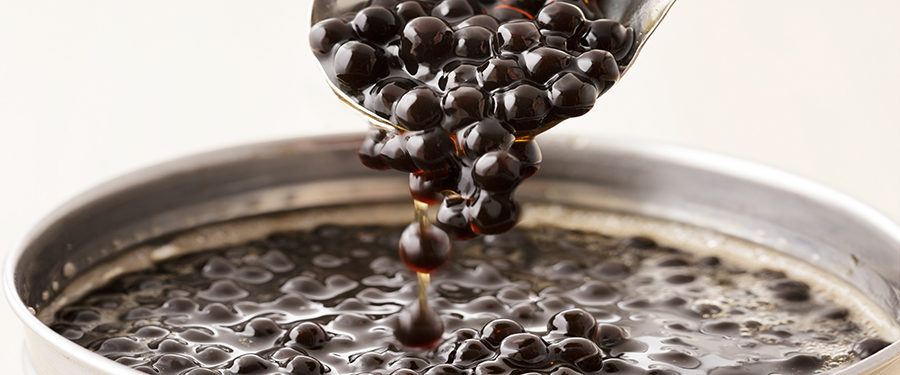

お茶の発祥地である中国では古来、希少だった最高品質のお茶を、時の皇帝に献上するしきたりがありました。
それは貢ぐ茶「貢茶（ゴンチャ）」と呼ばれ、皇帝に大いに愛されていました。
その後、時代を経て、お茶は広く大衆にも愛される飲み物として、ヨーロッパを始め、世界中に広まっていったとされています。
ゴンチャには、お茶の歴史に対する私たちの思いが込められています。
中国皇帝が愛したように、伝統ある中国茶をお客様に味わっていただきたい。しかしながら、格式張らずに気軽に味わっていただきたい、という思いです。
そんな思いを持って、ゴンチャは台湾南部に位置する第二の都市・高雄で2006年に誕生しました。
豊富なメニューから、まずお好きなドリンクをお選びいただき、甘さ、氷の量、トッピング（3つまで）をお選びいただきます。ゴンチャでは、高品質の台湾ティーを、お客様のお好みに合わせてカスタマイズし、お茶のスペシャリストであるティー・コンシェルジュがご提供いたします。
お仕事の前や後にホッと一息つきたいとき、休日のショッピングの合間に、あなただけの“My Gong cha”にぜひ会いに来てください。

私たちは、それぞれの茶葉の風味が一番引き出せる温度や時間、そして鮮度にこだわりお客様に高品質な台湾ティーをお楽しみいただくため日々精進いたします。
台湾茶のブランド産地のひとつ、阿里山（ありさん）で栽培された茶葉を始め、厳選された高品質な茶葉を使用し、店舗で丁寧に抽出しています。
台湾茶は香りや風味がとても繊細です。私たちは台湾茶ならではの美味しさを味わっていただくため、抽出時の湯温や時間を茶葉ごとに変えています。香りや鮮度にこだわり、抽出後4時間以内のものだけをお客様に提供しております。
台湾茶は、もともと中国の福建省から台湾へ茶の木が渡ったのがきっかけと言われています。 島国ならではの独特な気候と地理条件により、独自の発展を遂げ、台湾独自の製法でつくられるようになったお茶が、 「台湾茶」です。中国茶の中でも人気が高く、１つのジャンルとして「台湾茶」と分類されています。台湾茶に代表されるのは、東方美人茶や凍頂烏龍茶などの「烏龍茶」。 烏龍茶は「青茶」と呼ばれる半発酵のお茶で、不発酵の緑茶と全発酵の紅茶の中間であり、爽やかさとコクのバランスに優れた点が特徴です。 一言に烏龍茶と言っても、多くの種類や銘柄が存在し、その特徴もさまざまです。また、台湾では「青茶」だけでなく、「紅茶」や「緑茶」も生産されています。
share us on